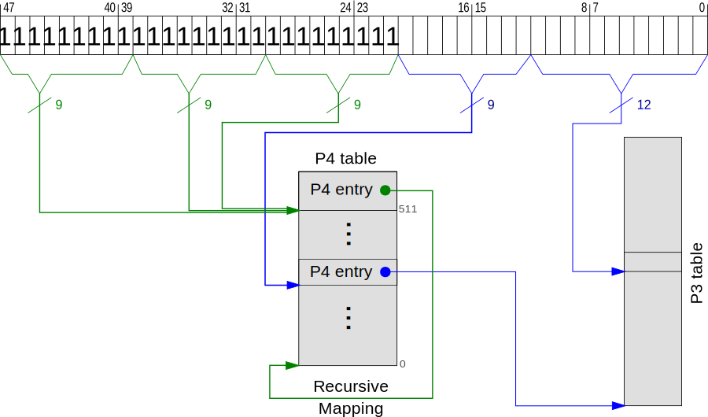
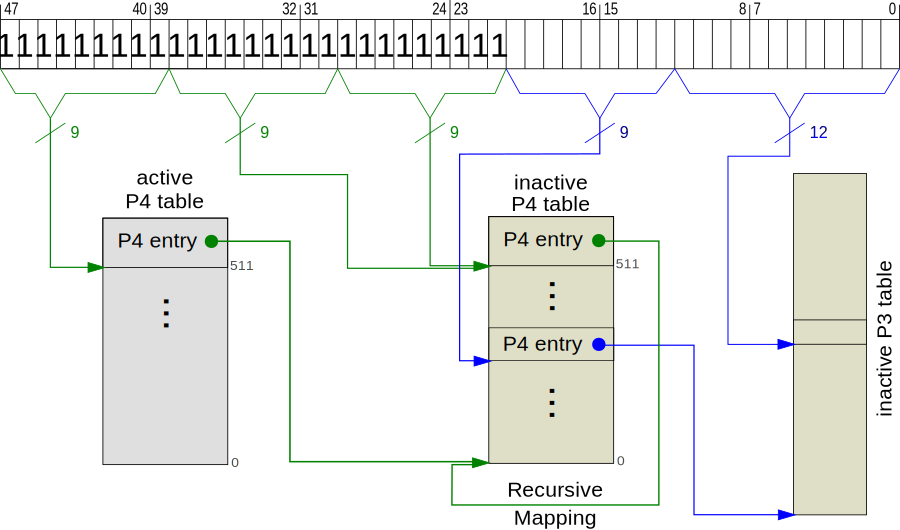
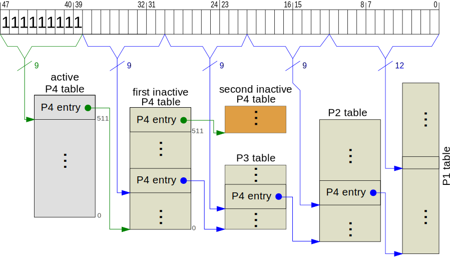
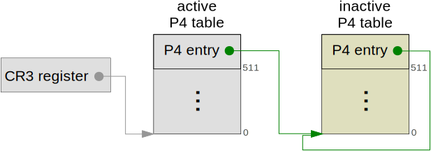
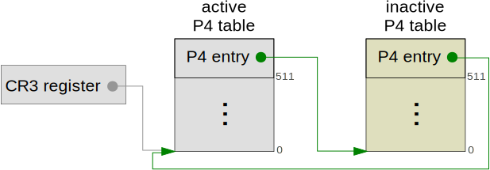

Error while using x86_64::shared::control_regs.
There was no `shared` in x86_64.
Thanks for the help. :)
Remap the Kernel
No longer updated! You are viewing the a post of the first edition of “Writing an OS in Rust”, which is no longer updated. You can find the second edition here.
In this post we will create a new page table to map the kernel sections correctly. Therefore we will extend the paging module to support modifications of inactive page tables as well. Then we will switch to the new table and secure our kernel stack by creating a guard page.
As always, you can find the source code on GitHub. Don’t hesitate to file issues there if you have any problems or improvement suggestions. There is also a comment section at the end of this page. Note that this post requires a current Rust nightly.
🔗Motivation
In the previous post, we had a strange bug in the unmap function. Its reason was a silent stack overflow, which corrupted the page tables. Fortunately, our kernel stack is right above the page tables so that we noticed the overflow relatively quickly. This won’t be the case when we add threads with new stacks in the future. Then a silent stack overflow could overwrite some data without us noticing. But eventually some completely unrelated function fails because a variable changed its value.
As you can imagine, these kinds of bugs are horrendous to debug. For that reason we will create a new hierarchical page table in this post, which has guard page below the stack. A guard page is basically an unmapped page that causes a page fault when accessed. Thus we can catch stack overflows right when they happen.
Also, we will use the information about kernel sections to map the various sections individually instead of blindly mapping the first gigabyte. To improve safety even further, we will set the correct page table flags for the various sections. Thus it won’t be possible to modify the contents of .text or to execute code from .data anymore.
🔗Preparation
There are many things that can go wrong when we switch to a new table. Therefore it’s a good idea to set up a debugger. You should not need it when you follow this post, but it’s good to know how to debug a problem when it occurs1.
We also update the Page and Frame types to make our lives easier. The Page struct gets some derived traits:
// in src/memory/paging/mod.rs
#[derive(Debug, Clone, Copy)]
pub struct Page {
number: usize,
}
By making it Copy, we can still use it after passing it to functions such as map_to. We also make the Page::containing_address public (if it isn’t already).
The Frame type gets a clone method too, but it does not implement the Clone trait:
// in src/memory/mod.rs
impl Frame {
...
fn clone(&self) -> Frame {
Frame { number: self.number }
}
}
The big difference is that this clone method is private. If we implemented the Clone trait, it would be public and usable from other modules. For example they could abuse it to free the same frame twice in the frame allocator.
So why do we implement Copy for Page and make even its constructor public, but keep Frame as private as possible? The reason is that we can easily check the status of a Page by looking at the page tables. For example, the map_to function can easily check that the given page is unused.
We can’t do that for a Frame. If we wanted to be sure that a given frame is unused, we would need to look at all mapped pages and verify that none of them is mapped to the given frame. Since this is impractical, we need to rely on the fact that a passed Frame is always unused. For that reason it must not be possible to create a new Frame or to clone one from other modules. The only valid way to get a frame is to allocate it from a FrameAllocator.
🔗Recap: The Paging Module
This post builds upon the post about page tables, so let’s start by quickly recapitulating what we’ve done there.
We created a memory::paging module, which reads and modifies the hierarchical page table through recursive mapping. The owner of the active P4 table and thus all subtables is an ActivePageTable struct, which must be instantiated only once.
The ActivePageTable struct provides the following interface:
/// Translates a virtual to the corresponding physical address.
/// Returns `None` if the address is not mapped.
pub fn translate(&self, virtual_address: VirtualAddress) ->
Option<PhysicalAddress>
{...}
/// Maps the page to the frame with the provided flags.
/// The `PRESENT` flag is added by default. Needs a
/// `FrameAllocator` as it might need to create new page tables.
pub fn map_to<A>(&mut self,
page: Page,
frame: Frame,
flags: EntryFlags,
allocator: &mut A)
where A: FrameAllocator
{...}
/// Maps the page to some free frame with the provided flags.
/// The free frame is allocated from the given `FrameAllocator`.
pub fn map<A>(&mut self, page: Page, flags: EntryFlags, allocator: &mut A)
where A: FrameAllocator
{...}
/// Identity map the the given frame with the provided flags.
/// The `FrameAllocator` is used to create new page tables if needed.
pub fn identity_map<A>(&mut self,
frame: Frame,
flags: EntryFlags,
allocator: &mut A)
where A: FrameAllocator
{...}
/// Unmaps the given page and adds all freed frames to the given
/// `FrameAllocator`.
fn unmap<A>(&mut self, page: Page, allocator: &mut A)
where A: FrameAllocator
{...}
🔗Overview
Our goal is to use the ActivePageTable functions to map the kernel sections correctly in a new page table. In pseudo code:
fn remap_the_kernel(boot_info: &BootInformation) {
let new_table = create_new_table();
for section in boot_info.elf_sections {
for frame in section {
new_table.identity_map(frame, section.flags);
}
}
new_table.activate();
create_guard_page_for_stack();
}
But the ActivePageTable methods – as the name suggests – only work for the active table. So we would need to activate new_table before we use identity_map. But this is not possible since it would cause an immediate page fault when the CPU tries to read the next instruction.
So we need a way to use the ActivePageTable methods on inactive page tables as well.
🔗Inactive Tables
Let’s start by creating a type for inactive page tables. Like an ActivePageTable, an InactivePageTable owns a P4 table. The difference is that the inactive P4 table is not used by the CPU.
We create the struct in memory/paging/mod.rs:
pub struct InactivePageTable {
p4_frame: Frame,
}
impl InactivePageTable {
pub fn new(frame: Frame) -> InactivePageTable {
// TODO zero and recursive map the frame
InactivePageTable { p4_frame: frame }
}
}
Without zeroing, the P4 table contains complete garbage and maps random memory. But we can’t zero it right now because the p4_frame is not mapped to a virtual address.
Well, maybe it’s still part of the identity mapped first gigabyte. Then we could zero it without problems since the physical address would be a valid virtual address, too. But this “solution” is hacky and won’t work after this post anymore (since we will remove all needless identity mapping).
Instead, we will try to temporary map the frame to some virtual address.
🔗Temporary Mapping
Therefor we add a TemporaryPage struct. We create it in a new temporary_page submodule to keep the paging module clean. It looks like this:
// src/memory/paging/mod.rs
mod temporary_page;
// src/memory/paging/temporary_page.rs
use super::Page;
pub struct TemporaryPage {
page: Page,
}
We add methods to temporary map and unmap the page:
use super::{ActivePageTable, VirtualAddress};
use memory::Frame;
impl TemporaryPage {
/// Maps the temporary page to the given frame in the active table.
/// Returns the start address of the temporary page.
pub fn map(&mut self, frame: Frame, active_table: &mut ActivePageTable)
-> VirtualAddress
{
use super::entry::WRITABLE;
assert!(active_table.translate_page(self.page).is_none(),
"temporary page is already mapped");
active_table.map_to(self.page, frame, WRITABLE, ???);
self.page.start_address()
}
/// Unmaps the temporary page in the active table.
pub fn unmap(&mut self, active_table: &mut ActivePageTable) {
active_table.unmap(self.page, ???)
}
}
The ??? needs to be some FrameAllocator. We could just add an additional allocator argument but there is a better solution.
It takes advantage of the fact that we always map the same page. So the allocator only needs to hold 3 frames: one P3, one P2, and one P1 table (the P4 table is always mapped). This allows us to create a tiny allocator and add it as field to the TemporaryPage struct itself:
pub struct TemporaryPage {
page: Page,
allocator: TinyAllocator,
}
impl TemporaryPage {
// as above, but with `&mut self.allocator` instead of `???`
}
struct TinyAllocator([Option<Frame>; 3]);
Our tiny allocator just consists of 3 slots to store frames. It will be empty when the temporary page is mapped and full when all corresponding page tables are unmapped.
To turn TinyAllocator into a frame allocator, we need to add the trait implementation:
use memory::FrameAllocator;
impl FrameAllocator for TinyAllocator {
fn allocate_frame(&mut self) -> Option<Frame> {
for frame_option in &mut self.0 {
if frame_option.is_some() {
return frame_option.take();
}
}
None
}
fn deallocate_frame(&mut self, frame: Frame) {
for frame_option in &mut self.0 {
if frame_option.is_none() {
*frame_option = Some(frame);
return;
}
}
panic!("Tiny allocator can hold only 3 frames.");
}
}
On allocation, we use the Option::take function to take an available frame from the first filled slot and on deallocation, we put the frame back into the first free slot.
To finish the TinyAllocator, we add a constructor that fills it from some other allocator:
impl TinyAllocator {
fn new<A>(allocator: &mut A) -> TinyAllocator
where A: FrameAllocator
{
let mut f = || allocator.allocate_frame();
let frames = [f(), f(), f()];
TinyAllocator(frames)
}
}
We use a little closure here that saves us some typing.
Now our TemporaryPage type is nearly complete. We only add one more method for convenience:
use super::table::{Table, Level1};
/// Maps the temporary page to the given page table frame in the active
/// table. Returns a reference to the now mapped table.
pub fn map_table_frame(&mut self,
frame: Frame,
active_table: &mut ActivePageTable)
-> &mut Table<Level1> {
unsafe { &mut *(self.map(frame, active_table) as *mut Table<Level1>) }
}
This function interprets the given frame as a page table frame and returns a Table reference. We return a table of level 1 because it forbids calling the next_table methods. Calling next_table must not be possible since it’s not a page of the recursive mapping. To be able to return a Table<Level1>, we need to make the Level1 enum in memory/paging/table.rs public.
The unsafe block is safe since the VirtualAddress returned by the map function is always valid and the type cast just reinterprets the frame’s content.
To complete the temporary_page module, we add a TemporaryPage::new constructor:
pub fn new<A>(page: Page, allocator: &mut A) -> TemporaryPage
where A: FrameAllocator
{
TemporaryPage {
page: page,
allocator: TinyAllocator::new(allocator),
}
}
🔗Zeroing the InactivePageTable
Now we can use TemporaryPage to fix our InactivePageTable::new function:
// in src/memory/paging/mod.rs
use self::temporary_page::TemporaryPage;
impl InactivePageTable {
pub fn new(frame: Frame,
active_table: &mut ActivePageTable,
temporary_page: &mut TemporaryPage)
-> InactivePageTable {
{
let table = temporary_page.map_table_frame(frame.clone(),
active_table);
// now we are able to zero the table
table.zero();
// set up recursive mapping for the table
table[511].set(frame.clone(), PRESENT | WRITABLE);
}
temporary_page.unmap(active_table);
InactivePageTable { p4_frame: frame }
}
}
We added two new arguments, active_table and temporary_page. We need an inner scope to ensure that the table variable is dropped before we try to unmap the temporary page again. This is required since the table variable exclusively borrows temporary_page as long as it’s alive.
Now we are able to create valid inactive page tables, which are zeroed and recursively mapped. But we still can’t modify them. To resolve this problem, we need to look at recursive mapping again.
🔗Revisiting Recursive Mapping
Recursive mapping works by mapping the last P4 entry to the P4 table itself. Thus we can access the page tables by looping one or more times.
For example, accessing a P3 table requires lopping three times:

We can use the same mechanism to access inactive tables. The trick is to change the recursive mapping of the active P4 table to point to the inactive P4 table:

Now the inactive table can be accessed exactly as the active table, even the magic addresses are the same. This allows us to use the ActivePageTable interface and the existing mapping methods for inactive tables, too. Note that everything besides the recursive mapping continues to work exactly as before since we’ve never changed the active table in the CPU.
🔗Implementation Draft
We add a method to ActivePageTable that temporary changes the recursive mapping and executes a given closure in the new context:
pub fn with<F>(&mut self,
table: &mut InactivePageTable,
f: F)
where F: FnOnce(&mut ActivePageTable)
{
use x86_64::instructions::tlb;
// overwrite recursive mapping
self.p4_mut()[511].set(table.p4_frame.clone(), PRESENT | WRITABLE);
tlb::flush_all();
// execute f in the new context
f(self);
// TODO restore recursive mapping to original p4 table
}
It overwrites the 511th P4 entry and points it to the inactive table frame. Then it flushes the translation lookaside buffer (TLB), which still contains some old translations. We need to flush all pages that are part of the recursive mapping, so the easiest way is to flush the TLB completely.
Now that the recursive mapping points to the given inactive table, we execute the closure in the new context. The closure can call all active table methods such as translate or map_to. It could even call with again and chain another inactive table! Wait… that would not work:

Here the closure called with again and thus changed the recursive mapping of the inactive table to point to a second inactive table. Now we want to modify the P1 of the second inactive table, but instead we land on the P1 of the first inactive table since we never follow the pointer to the second table. Only when modifying the P2, P3, or P4 table we really access the second inactive table. This inconsistency would break our mapping functions completely.
So we should really prohibit the closure from calling with again. We could add some runtime assertion that panics when the active table is not recursive mapped anymore. But a cleaner solution is to split off the mapping code from ActivePageTable into a new Mapper type.
🔗Refactoring
We start by creating a new memory/paging/mapper.rs submodule and moving the ActivePageTable struct and its impl block to it. Then we rename it to Mapper and make all methods public (so we can still use them from the paging module). The with method is removed.
After adjusting the imports, the module should look like this:
// in memory/paging/mod.rs
mod mapper;
// memory/paging/mapper.rs
use super::{VirtualAddress, PhysicalAddress, Page, ENTRY_COUNT};
use super::entry::*;
use super::table::{self, Table, Level4, Level1};
use memory::{PAGE_SIZE, Frame, FrameAllocator};
use core::ptr::Unique;
pub struct Mapper {
p4: Unique<Table<Level4>>,
}
impl Mapper {
pub unsafe fn new() -> Mapper {...}
pub fn p4(&self) -> &Table<Level4> {...}
// the remaining mapping methods, all public
}
Now we create a new ActivePageTable struct in memory/paging/mod.rs:
pub use self::mapper::Mapper;
use core::ops::{Deref, DerefMut};
pub struct ActivePageTable {
mapper: Mapper,
}
impl Deref for ActivePageTable {
type Target = Mapper;
fn deref(&self) -> &Mapper {
&self.mapper
}
}
impl DerefMut for ActivePageTable {
fn deref_mut(&mut self) -> &mut Mapper {
&mut self.mapper
}
}
impl ActivePageTable {
unsafe fn new() -> ActivePageTable {
ActivePageTable {
mapper: Mapper::new(),
}
}
pub fn with<F>(&mut self,
table: &mut InactivePageTable,
f: F)
where F: FnOnce(&mut Mapper) // `Mapper` instead of `ActivePageTable`
{...}
}
The Deref and DerefMut implementations allow us to use the ActivePageTable exactly as before, for example we still can call map_to on it (because of deref coercions). But the closure called in the with function can no longer invoke with again. The reason is that we changed the type of the generic F parameter a bit: Instead of an ActivePageTable, the closure just gets a Mapper as argument.
🔗Restoring the Recursive Mapping
Right now, the with function overwrites the recursive mapping and calls the closure. But it does not restore the previous recursive mapping yet. So let’s fix that!
To backup the physical P4 frame of the active table, we can either read it from the 511th P4 entry (before we change it) or from the CR3 control register directly. We will do the latter as it should be faster and we already have a external crate that makes it easy:
use x86_64::registers::control_regs;
let backup = Frame::containing_address(
unsafe { control_regs::cr3() } as usize
);
Why is it unsafe? Because reading the CR3 register leads to a CPU exception if the processor is not running in kernel mode (Ring 0). But this code will always run in kernel mode, so the unsafe block is completely safe here.
Now that we have a backup of the original P4 frame, we need a way to restore it after the closure has run. So we need to somehow modify the 511th entry of the original P4 frame, which is still the active table in the CPU. But we can’t access it because the recursive mapping now points to the inactive table:

It’s just not possible to access the active P4 entry in 4 steps, so we can’t reach it through the 4-level page table.
We could try to overwrite the recursive mapping of the inactive P4 table and point it back to the original P4 frame:

Now we can reach the active P4 entry in 4 steps and could restore the original mapping in the active table. But this hack has a drawback: The inactive table is now invalid since it is no longer recursive mapped. We would need to fix it by using a temporary page again (as above).
But if we need a temporary page anyway, we can just use it to map the original P4 frame directly. Thus we avoid the above hack and make the code simpler. So let’s do it that way.
🔗Completing the Implementation
The with method gets an additional TemporaryPage argument, which we use to backup and restore the original recursive mapping:
pub fn with<F>(&mut self,
table: &mut InactivePageTable,
temporary_page: &mut temporary_page::TemporaryPage, // new
f: F)
where F: FnOnce(&mut Mapper)
{
use x86_64::instructions::tlb;
use x86_64::registers::control_regs;
{
let backup = Frame::containing_address(
control_regs::cr3().0 as usize);
// map temporary_page to current p4 table
let p4_table = temporary_page.map_table_frame(backup.clone(), self);
// overwrite recursive mapping
self.p4_mut()[511].set(table.p4_frame.clone(), PRESENT | WRITABLE);
tlb::flush_all();
// execute f in the new context
f(self);
// restore recursive mapping to original p4 table
p4_table[511].set(backup, PRESENT | WRITABLE);
tlb::flush_all();
}
temporary_page.unmap(self);
}
Again, the inner scope is needed to end the borrow of temporary_page so that we can unmap it again. Note that we need to flush the TLB another time after we restored the original recursive mapping.
Now the with function is ready to be used!
🔗Remapping the Kernel
Let’s tackle the main task of this post: remapping the kernel sections. Therefor we create a remap_the_kernel function in memory/paging/mod.rs:
use multiboot2::BootInformation;
use memory::{PAGE_SIZE, Frame, FrameAllocator};
pub fn remap_the_kernel<A>(allocator: &mut A, boot_info: &BootInformation)
where A: FrameAllocator
{
let mut temporary_page = TemporaryPage::new(Page { number: 0xcafebabe },
allocator);
let mut active_table = unsafe { ActivePageTable::new() };
let mut new_table = {
let frame = allocator.allocate_frame().expect("no more frames");
InactivePageTable::new(frame, &mut active_table, &mut temporary_page)
};
active_table.with(&mut new_table, &mut temporary_page, |mapper| {
let elf_sections_tag = boot_info.elf_sections_tag()
.expect("Memory map tag required");
for section in elf_sections_tag.sections() {
// TODO mapper.identity_map() all pages of `section`
}
});
}
First, we create a temporary page at page number 0xcafebabe. We could use 0xdeadbeaf or 0x123456789 as well, as long as the page is unused. The active_table and the new_table are created using their constructor functions.
Then we use the with function to temporary change the recursive mapping and execute the closure as if the new_table were active. This allows us to map the sections in the new table without changing the active mapping. To get the kernel sections, we use the Multiboot information structure.
Let’s resolve the above TODO by identity mapping the sections:
for section in elf_sections_tag.sections() {
use self::entry::WRITABLE;
if !section.is_allocated() {
// section is not loaded to memory
continue;
}
assert!(section.start_address() % PAGE_SIZE == 0,
"sections need to be page aligned");
println!("mapping section at addr: {:#x}, size: {:#x}",
section.addr, section.size);
let flags = WRITABLE; // TODO use real section flags
let start_frame = Frame::containing_address(section.start_address());
let end_frame = Frame::containing_address(section.end_address() - 1);
for frame in Frame::range_inclusive(start_frame, end_frame) {
mapper.identity_map(frame, flags, allocator);
}
}
We skip all sections that were not loaded into memory (e.g. debug sections). We require that all sections are page aligned because a page must not contain sections with different flags. For example, we would need to set the EXECUTABLE and WRITABLE flags for a page that contains parts of the .code and .data section. Thus we could modify the running code or execute bytes from the .data section as code.
To map a section, we iterate over all of its frames of a section by using a new Frame::range_inclusive function (shown below). Note that the end address is exclusive, so that it’s not part of the section anymore (it’s the first byte of the next section). Thus we need to subtract 1 to get the end_frame.
The Frame::range_inclusive function looks like this:
// in src/memory/mod.rs
impl Frame {
fn range_inclusive(start: Frame, end: Frame) -> FrameIter {
FrameIter {
start: start,
end: end,
}
}
}
struct FrameIter {
start: Frame,
end: Frame,
}
impl Iterator for FrameIter {
type Item = Frame;
fn next(&mut self) -> Option<Frame> {
if self.start <= self.end {
let frame = self.start.clone();
self.start.number += 1;
Some(frame)
} else {
None
}
}
}
Instead of creating a custom iterator, we could have used the Range struct of the standard library. But it requires that we implement the One and Add traits for Frame. Then every module could perform arithmetic operations on frames, for example let frame3 = frame1 + frame2. This would violate our safety invariants because frame3 could be already in use. The range_inclusive function does not have these problems because it is only available inside the memory module.
🔗Page Align Sections
Right now our sections aren’t page aligned, so the assertion in remap_the_kernel would fail. We can fix this by making the section size a multiple of the page size. To do this, we add an ALIGN statement to all sections in the linker file. For example:
SECTIONS {
. = 1M;
.text :
{
*(.text .text.*)
. = ALIGN(4K);
}
}
The . is the “current location counter” and represents the current virtual address. At the beginning of the SECTIONS tag we set it to 1M, so our kernel starts at 1MiB. We use the ALIGN function to align the current location counter to the next 4K boundary (4K is the page size). Thus the end of the .text section – and the beginning of the next section – are page aligned.
To put all sections on their own page, we add the ALIGN statement to all of them:
/* src/arch/x86_64/linker.ld */
ENTRY(start)
SECTIONS {
. = 1M;
.rodata :
{
/* ensure that the multiboot header is at the beginning */
KEEP(*(.multiboot_header))
*(.rodata .rodata.*)
. = ALIGN(4K);
}
.text :
{
*(.text .text.*)
. = ALIGN(4K);
}
.data :
{
*(.data .data.*)
. = ALIGN(4K);
}
.bss :
{
*(.bss .bss.*)
. = ALIGN(4K);
}
.got :
{
*(.got)
. = ALIGN(4K);
}
.got.plt :
{
*(.got.plt)
. = ALIGN(4K);
}
.data.rel.ro : ALIGN(4K) {
*(.data.rel.ro.local*) *(.data.rel.ro .data.rel.ro.*)
. = ALIGN(4K);
}
.gcc_except_table : ALIGN(4K) {
*(.gcc_except_table)
. = ALIGN(4K);
}
}
Instead of page aligning the .multiboot_header section, we merge it into the .rodata section. That way, we don’t waste a whole page for the few bytes of the Multiboot header. We could merge it into any section, but .rodata fits best because it has the same flags (neither writable nor executable). The Multiboot header still needs to be at the beginning of the file, so .rodata must be our first section now.
🔗Testing it
Time to test it! We re-export the remap_the_kernel function from the memory module and call it from rust_main:
// in src/memory/mod.rs
pub use self::paging::remap_the_kernel;
// in src/lib.rs
#[no_mangle]
pub extern "C" fn rust_main(multiboot_information_address: usize) {
// ATTENTION: we have a very small stack and no guard page
// the same as before
vga_buffer::clear_screen();
println!("Hello World{}", "!");
let boot_info = unsafe {
multiboot2::load(multiboot_information_address)
};
let memory_map_tag = boot_info.memory_map_tag()
.expect("Memory map tag required");
let elf_sections_tag = boot_info.elf_sections_tag()
.expect("Elf sections tag required");
let kernel_start = elf_sections_tag.sections().map(|s| s.addr)
.min().unwrap();
let kernel_end = elf_sections_tag.sections().map(|s| s.addr + s.size)
.max().unwrap();
let multiboot_start = multiboot_information_address;
let multiboot_end = multiboot_start + (boot_info.total_size as usize);
println!("kernel start: 0x{:x}, kernel end: 0x{:x}",
kernel_start, kernel_end);
println!("multiboot start: 0x{:x}, multiboot end: 0x{:x}",
multiboot_start, multiboot_end);
let mut frame_allocator = memory::AreaFrameAllocator::new(
kernel_start as usize, kernel_end as usize, multiboot_start,
multiboot_end, memory_map_tag.memory_areas());
// this is the new part
memory::remap_the_kernel(&mut frame_allocator, boot_info);
println!("It did not crash!");
loop {}
}
If you see the It did not crash message, the kernel survived our page table modifications without causing a CPU exception. But did we map the kernel sections correctly?
Let’s try it out by switching to the new table! We identity map all kernel sections, so it should work without problems.
🔗Switching Tables
Switching tables is easy. We just need to reload the CR3 register with the physical address of the new P4 frame.
We do this in a new ActivePageTable::switch method:
// in `impl ActivePageTable` in src/memory/paging/mod.rs
pub fn switch(&mut self, new_table: InactivePageTable) -> InactivePageTable {
use x86_64::PhysicalAddress;
use x86_64::registers::control_regs;
let old_table = InactivePageTable {
p4_frame: Frame::containing_address(
control_regs::cr3().0 as usize
),
};
unsafe {
control_regs::cr3_write(PhysicalAddress(
new_table.p4_frame.start_address() as u64));
}
old_table
}
This function activates the given inactive table and returns the previous active table as a InactivePageTable. We don’t need to flush the TLB here, as the CPU does it automatically when the P4 table is switched. In fact, the tlb::flush_all function, which we used above, does nothing more than reloading the CR3 register.
Now we are finally able to switch to the new table. We do it by adding the following lines to our remap_the_kernel function:
// in remap_the_kernel in src/memory/paging/mod.rs
...
active_table.with(&mut new_table, &mut temporary_page, |mapper| {
...
});
let old_table = active_table.switch(new_table);
println!("NEW TABLE!!!");
Let’s cross our fingers and run it…
… and it fails with a boot loop.
🔗Debugging
A QEMU boot loop indicates that some CPU exception occurred. We can see all thrown CPU exception by starting QEMU with -d int:
> qemu-system-x86_64 -d int -no-reboot -cdrom build/os-x86_64.iso
...
check_exception old: 0xffffffff new 0xe
0: v=0e e=0002 i=0 cpl=0 IP=0008:000000000010ab97 pc=000000000010ab97
SP=0010:00000000001182d0 CR2=00000000000b8f00
...
These lines are the important ones. We can read many useful information from them:
-
v=0e: An exception with number0xeoccurred, which is a page fault according to the OSDev Wiki. -
e=0002: The CPU set an error code, which tells us why the exception occurred. The0x2bit tells us that it was caused by a write operation. And since the0x1bit is not set, the target page was not present. -
IP=0008:000000000010ab97orpc=000000000010ab97: The program counter register tells us that the exception occurred when the CPU tried to execute the instruction at0x10ab97. We can disassemble this address to see the corresponding function. The0008:prefix inIPindicates the code GDT segment. -
SP=0010:00000000001182d0: The stack pointer was0x1182d0(the0010:prefix indicates the data GDT segment). This tells us if it the stack overflowed. -
CR2=00000000000b8f00: Finally the most useful register. It tells us which virtual address caused the page fault. In our case it’s0xb8f00, which is part of the VGA text buffer.
So let’s find out which function caused the exception:
objdump -d build/kernel-x86_64.bin | grep -B100 "10ab97"
We disassemble our kernel and search for 10ab97. The -B100 option prints the 100 preceding lines too. The output tells us the responsible function:
...
000000000010aa80 <_ZN10vga_buffer6Writer10write_byte20h4601f5e405b6e89facaE>:
10aa80: 55 push %rbp
...
10ab93: 66 8b 55 aa mov -0x56(%rbp),%dx
10ab97: 66 89 14 48 mov %dx,(%rax,%rcx,2)
The reason for the cryptical function name is Rust’s name mangling. But we can identity the vga_buffer::Writer::write_byte function nonetheless.
So the reason for the page fault is that the write_byte function tried to write to the VGA text buffer at 0xb8f00. Of course this provokes a page fault: We forgot to identity map the VGA buffer in the new page table.
The fix is pretty simple:
// in src/memory/paging/mod.rs
pub fn remap_the_kernel<A>(allocator: &mut A, boot_info: &BootInformation)
where A: FrameAllocator
{
...
active_table.with(&mut new_table, &mut temporary_page, |mapper| {
...
for section in elf_sections_tag.sections() {
...
}
// identity map the VGA text buffer
let vga_buffer_frame = Frame::containing_address(0xb8000); // new
mapper.identity_map(vga_buffer_frame, WRITABLE, allocator); // new
});
let old_table = active_table.switch(new_table);
println!("NEW TABLE!!!");
}
Now we should see the NEW TABLE!!! message (and also the It did not crash! line again). Congratulations! We successfully switched our kernel to a new page table!
🔗Fixing the Frame Allocator
The same problem as above occurs when we try to use our AreaFrameAllocator again. Try to add the following to rust_main after switching to the new table:
// in src/lib.rs
pub extern "C" fn rust_main(multiboot_information_address: usize) {
...
memory::remap_the_kernel(&mut frame_allocator, boot_info);
frame_allocator.allocate_frame(); // new: try to allocate a frame
println!("It did not crash!");
This causes the same bootloop as above. The reason is that the AreaFrameAllocator uses the memory map of the Multiboot information structure. But we did not map the Multiboot structure, so it causes a page fault. To fix it, we identity map it as well:
// in `remap_the_kernel` in src/memory/paging/mod.rs
active_table.with(&mut new_table, &mut temporary_page, |mapper| {
// … identity map the allocated kernel sections
// … identity map the VGA text buffer
// new:
// identity map the multiboot info structure
let multiboot_start = Frame::containing_address(boot_info.start_address());
let multiboot_end = Frame::containing_address(boot_info.end_address() - 1);
for frame in Frame::range_inclusive(multiboot_start, multiboot_end) {
mapper.identity_map(frame, PRESENT, allocator);
}
});
Normally the multiboot struct fits on one page. But GRUB can place it anywhere, so it could randomly cross a page boundary. Therefore we use range_inclusive to be on the safe side. Note that we need to subtract 1 to get the address of the last byte because the end address is exclusive.
Now we should be able to allocate frames again.
🔗Using the Correct Flags
Right now, our new table maps all kernel sections as writable and executable. To fix this, we add a EntryFlags::from_elf_section_flags function:
// in src/memory/paging/entry.rs
use multiboot2::ElfSection;
impl EntryFlags {
pub fn from_elf_section_flags(section: &ElfSection) -> EntryFlags {
use multiboot2::{ELF_SECTION_ALLOCATED, ELF_SECTION_WRITABLE,
ELF_SECTION_EXECUTABLE};
let mut flags = EntryFlags::empty();
if section.flags().contains(ELF_SECTION_ALLOCATED) {
// section is loaded to memory
flags = flags | PRESENT;
}
if section.flags().contains(ELF_SECTION_WRITABLE) {
flags = flags | WRITABLE;
}
if !section.flags().contains(ELF_SECTION_EXECUTABLE) {
flags = flags | NO_EXECUTE;
}
flags
}
}
It just converts the ELF section flags to page table flags.
Now we can use it to fix the TODO in our remap_the_kernel function:
// in src/memory/paging/mod.rs
pub fn remap_the_kernel<A>(allocator: &mut A, boot_info: &BootInformation)
where A: FrameAllocator
{
...
active_table.with(&mut new_table, &mut temporary_page, |mapper| {
...
for section in elf_sections_tag.sections() {
...
if !section.is_allocated() {
// section is not loaded to memory
continue;
}
...
// this is the new part
let flags = EntryFlags::from_elf_section_flags(section);
...
for frame in Frame::range_inclusive(start_frame, end_frame) {
mapper.identity_map(frame, flags, allocator);
}
}
...
});
...
}
But when we test it now, we get a page fault again. We can use the same technique as above to get the responsible function. I won’t bother you with the QEMU output and just tell you the results:
This time the responsible function is control_regs::cr3_write() itself. From the error code we learn that it was a page protection violation and caused by “reading a 1 in a reserved field”. So the page table had some reserved bit set that should be always 0. It must be the NO_EXECUTE flag, since it’s the only new bit that we set in the page table.
🔗The NXE Bit
The reason is that the NO_EXECUTE bit must only be used when the NXE bit in the Extended Feature Enable Register (EFER) is set. That register is similar to Rust’s feature gating and can be used to enable all sorts of advanced CPU features. Since the NXE bit is off by default, we caused a page fault when we added the NO_EXECUTE bit to the page table.
So we need to enable the NXE bit. For that we use the x86_64 crate again:
// in lib.rs
fn enable_nxe_bit() {
use x86_64::registers::msr::{IA32_EFER, rdmsr, wrmsr};
let nxe_bit = 1 << 11;
unsafe {
let efer = rdmsr(IA32_EFER);
wrmsr(IA32_EFER, efer | nxe_bit);
}
}
The unsafe block is needed since accessing the EFER register is only allowed in kernel mode. But we are in kernel mode, so everything is fine.
When we call this function before calling remap_the_kernel, everything should work again.
🔗The Write Protect Bit
Right now, we are still able to modify the .code and .rodata sections, even though we did not set the WRITABLE flag for them. The reason is that the CPU ignores this bit in kernel mode by default. To enable write protection for the kernel as well, we need to set the Write Protect bit in the CR0 register:
// in lib.rs
fn enable_write_protect_bit() {
use x86_64::registers::control_regs::{cr0, cr0_write, Cr0};
unsafe { cr0_write(cr0() | Cr0::WRITE_PROTECT) };
}
The cr0 functions are unsafe because accessing the CR0 register is only allowed in kernel mode.
If we haven’t forgotten to set the WRITABLE flag somewhere, it should still work without crashing.
🔗Creating a Guard Page
The final step is to create a guard page for our kernel stack.
The decision to place the kernel stack right above the page tables was already useful to detect a silent stack overflow in the previous post. Now we profit from it again. Let’s look at our assembly .bss section again to understand why:
; in src/arch/x86_64/boot.asm
section .bss
align 4096
p4_table:
resb 4096
p3_table:
resb 4096
p2_table:
resb 4096
stack_bottom:
resb 4096 * 4
stack_top:
The old page tables are right below the stack. They are still identity mapped since they are part of the kernel’s .bss section. We just need to turn the old p4_table into a guard page to secure the kernel stack. That way we even reuse the memory of the old P3 and P2 tables to increase the stack size.
So let’s implement it:
// in src/memory/paging/mod.rs
pub fn remap_the_kernel<A>(allocator: &mut A, boot_info: &BootInformation)
where A: FrameAllocator
{
...
let old_table = active_table.switch(new_table);
println!("NEW TABLE!!!");
// below is the new part
// turn the old p4 page into a guard page
let old_p4_page = Page::containing_address(
old_table.p4_frame.start_address()
);
active_table.unmap(old_p4_page, allocator);
println!("guard page at {:#x}", old_p4_page.start_address());
}
Now we have a very basic guard page: The page below the stack is unmapped, so a stack overflow causes an immediate page fault. Thus, silent stack overflows are no longer possible.
Or to be precise, they are improbable. If we have a function with many big stack variables, it’s possible that the guard page is missed. For example, the following function could still corrupt memory below the stack:
fn stack_overflow() {
let x = [0; 99999];
}
This creates a very big array on the stack, which is currently filled from bottom to top. Therefore it misses the guard page and overwrites some memory below the stack. Eventually it hits the bottom of the guard page and causes a page fault. But before, it messes up memory, which is bad.
Fortunately, there exists a solution called stack probes. The basic idea is to check all required stack pages at the beginning of each function. For example, a function that needs 9000 bytes on the stack would try to access SP + 0, SP + 4096, and SP + 2 * 4096 (SP is the stack pointer). If the stack is not big enough, the guard page is hit and a page fault occurs. The function can’t mess up memory anymore since the stack check occurs right at its start.
Unfortunately stack probes require compiler support. They already work on Windows but they don’t exist on Linux yet. The problem seems to be in LLVM, which Rust uses as backend. Hopefully it gets resolved soon so that our kernel stack becomes safe. For the current status and more information about stack probes check out the tracking issue.
🔗What’s next?
Now that we have a (mostly) safe kernel stack and a working page table module, we can add a virtual memory allocator. The next post will explore Rust’s allocator API and create a very basic allocator. At the end of that post, we will be able to use Rust’s allocation and collections types such as Box, Vec, or even BTreeMap.
🔗Footnotes
1
For this post the most useful GDB command is probably p/x *((long int*)0xfffffffffffff000)@512. It prints all entries of the recursively mapped P4 table by interpreting it as an array of 512 long ints (the @512 is GDB’s array syntax). Of course you can also print other tables by adjusting the address.
There is some discussion on hacker news, /r/rust, and /r/programming.